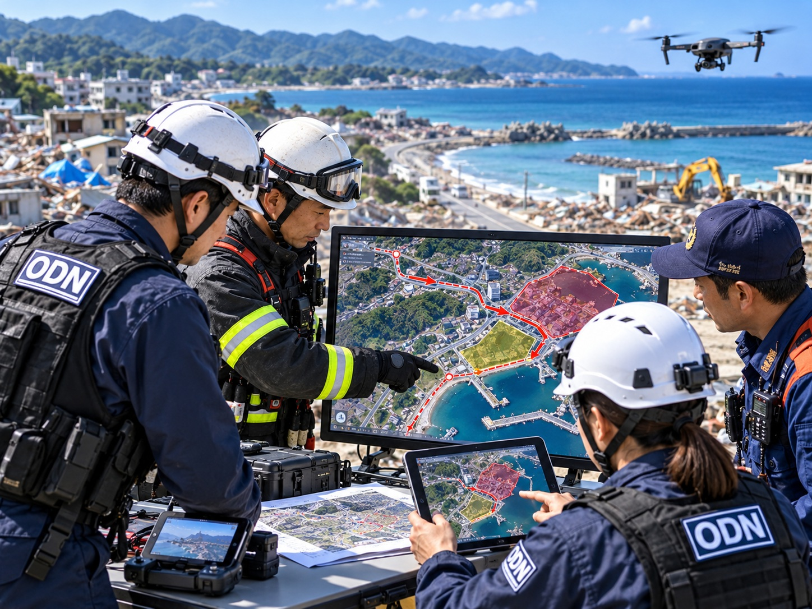
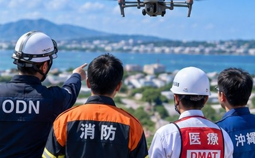
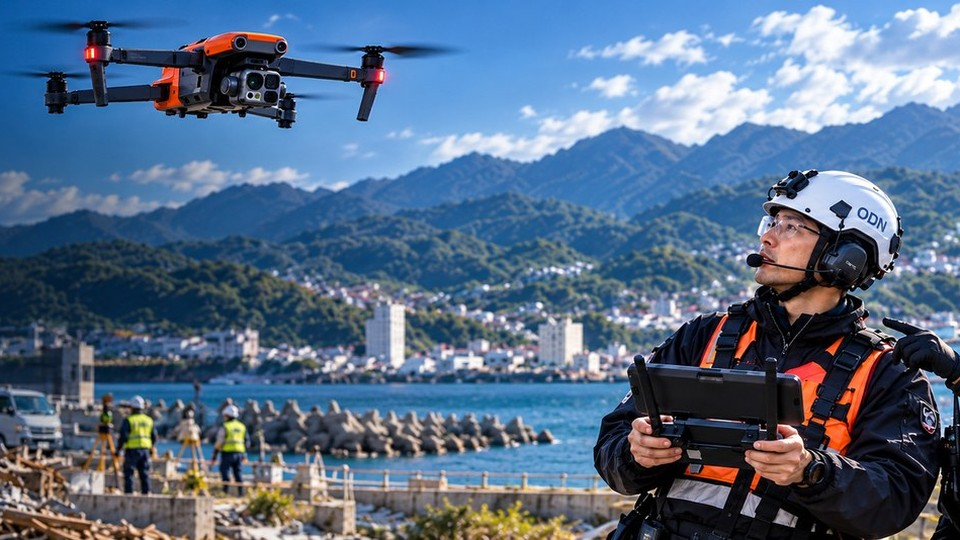

♙
消防との連携
現場の状況を共有し、上空からの確認が安全な活動判断に役立つよう支援します。
ドローンが収集した映像や位置情報を、災害対応に必要な情報として活用できるよう、関係機関との連絡方法や役割分担を整理します。平常時からの情報交換や合同訓練を通じて、災害発生時に円滑な協力ができる体制づくりを進めます。
現場の状況を共有し、上空からの確認が安全な活動判断に役立つよう支援します。
活動エリアや搬送経路など、必要な状況を共有する方法を検討します。
被害状況の把握や地域支援のため、収集情報の適切な提供を目指します。
地域特性や支援ニーズの共有、平時の防災活動に取り組みます。
活動の目的や連絡窓口、関係者の役割を確認します。
立入範囲、飛行条件、許可・安全対策などを確認します。
必要な画像や位置情報を、定めた方法で関係者へ届けます。
連携の課題を整理し、次回の活動計画に反映します。

空撮した映像を整理し、現場全体の状況を把握するための参考情報として提供します。

安全に活動できる範囲や進入経路を関係者と調整します。

要請内容に応じ、活動に必要な情報を共有する方法を検討します。

避難場所の周辺や地域の被害状況を俯瞰して把握します。